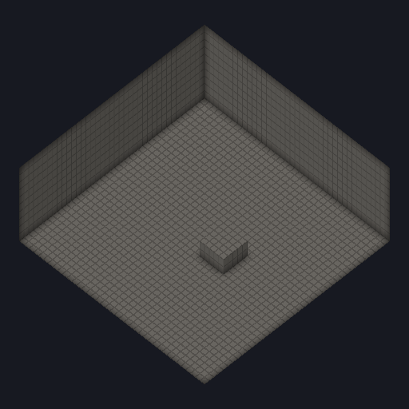
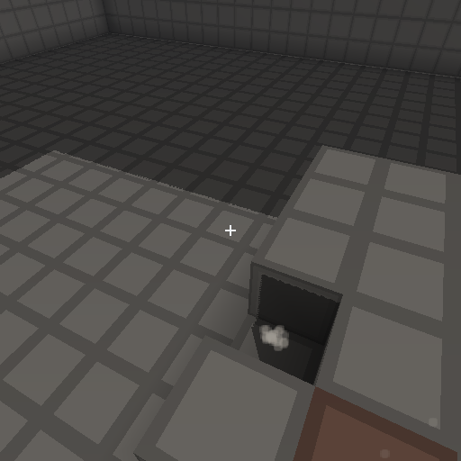
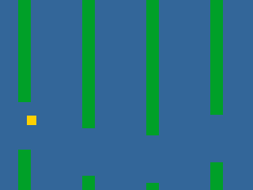

A game engine in Rust, built to be operated. The simulation underneath is bit-deterministic: same build, same seed, same inputs, same result, byte for byte.
Most engines are built around an editor, and everything else reaches the engine through whatever that editor exposes. renew is built the other way around. Every capability is a library with a command-line face and machine-readable output, so a developer at a terminal, a build script and an autonomous agent all drive it the same way. That is what AI-first means here.
Status: early development. The crates are published at 0.1.1, but
APIs change without notice and no module is stable yet, so this is not
something to start a shipping game on today. Everything on this page exists and is
covered by tests.
Fixed timestep over integer nanoseconds, Q47.16 fixed point, no wall-clock reads, no unseeded randomness, no iteration-order-dependent state. Replay and lockstep fall out of that, because the simulation was built this way from the start.
Build, test, benchmark, asset work, running samples, all headless. Every command
takes --json and emits a schema-versioned document a script can
depend on.
Everything outside the core can be removed. CI builds and tests one configuration per optional crate, with that crate and everything depending on it excluded.
Performance claims arrive with numbers and the configuration that produced them. The steady-state frame loop is held to zero heap allocations through the engine's allocators, counted in dev builds.
Every picture below was produced by the sample beneath it and is committed in the repository.



Six samples ship with the engine. The four simulation samples run headless and answer with a digest, and those are the runs CI checks on every target at once.
$ cargo run -p renew-sample-cube --bin cube
cube script=stand source=script ticks=600 digest=0xcbc2871e466a6bfc solids=5012 broken=0 placed=0 grounded=true
$ cargo run -p renew-sample-leap --bin leap
leap script=stand ticks=600 digest=0xd7058b85479adeb4 grounded=true wall=false
$ cargo run -p renew-sample-chess --bin chess
chess count depth=4 nodes=197281 result=ongoingOne command runs a pinned set of simulations and writes exactly what they produced:
$ cargo run --bin renew -- determinism --emit windows.json
wrote 15 digests for windows/x86_64 to windows.json{
"schema_version": 1,
"os": "windows",
"arch": "x86_64",
"toolchain": "rustc 1.97.1 (8bab26f4f 2026-07-14)",
"digests": {
"chess/play-60/digest": "0x6bf0be22d95711ee",
"cube/build-900/digest": "0xce632722e5698fa1",
"cube/patrol-600/digest": "0x29559b5af5e634d2"
// 12 more, in key order
}
}CI produces that file on five targets every commit and holds them against each other. Any disagreement fails the build.
Making a simulation reproduce bit-for-bit across targets sets out what that property costs in practice: why the arithmetic is fixed point rather than floating, why the frame loop cannot read a clock, and why a digest compared against a committed constant proves nothing about a second machine.
Requires stable Rust 1.97 or newer.
git clone https://github.com/renew-engine/renew
cd renew
cargo run --bin renew -- build
cargo run --bin renew -- test
# a voxel world, drawn to a window
cargo run --bin renew -- --features window run cube -- --windowOne binary drives the workspace the same way for people, scripts, and CI:
cargo run --bin renew -- help
configure, build, test, bench,
run, record, replay, lint,
check, coverage, modules,
asset-pack, asset-inspect, ui-compile,
determinism, doctor. Each one takes --json and
answers with a single document carrying a schema_version.
Everything outside the five core crates can be removed. CI builds and tests one configuration per optional crate on every commit, with that crate and its dependents excluded.
| Crate | What it does | Maturity |
|---|---|---|
renew-diag | Log records, severity levels, and the sink interface the engine reports through | internal, core |
renew-event | The event vocabulary (key codes, pointer buttons, event shapes) as plain data | internal, core |
renew-math | Vec2/3/4, Mat4, Quat, Aabb3, with documented layout and branchless kernels | internal, core |
renew-memory | LinearArena, a generation-checked Pool<T>, and a counting global allocator | internal, core |
renew-platform | The engine's only doorway to the OS: clock, files, named threads, window | internal, core |
renew-fixed | Q47.16 fixed-point arithmetic, the number type the simulation is written in | bootstrap |
renew-frame | The fixed-timestep loop: an accumulator over integer nanoseconds, clock passed in | bootstrap |
renew-ecs | Sparse-set storage with a defined iteration order | bootstrap |
renew-jobs | A fixed-size worker pool with a deterministic-chunk parallel_for | bootstrap |
renew-rng | Seeded, reproducible random numbers: PCG32 with derived per-domain streams | bootstrap |
renew-input | Input state and mapping, over the event vocabulary | bootstrap |
renew-replay | Recording a run and playing it back: event-to-trace translation both ways, and a tick-indexed loader | bootstrap |
renew-trace | The recorded-input file format: a line-oriented text codec whose reader refuses anything it does not understand | bootstrap |
renew-physics2d | Bodies, shapes, broadphase, SAT narrowphase, raycasts, sweeps, slide resolution | bootstrap |
renew-physics3d | The same surface in three dimensions, axis-aligned only | bootstrap |
renew-scene | Local placements, parenting, and a propagation pass composing them over entity storage | bootstrap |
renew-rhi | The GPU doorway: Vulkan through ash, behind an interface naming no Vulkan type | bootstrap |
renew-render2d | Sprites from an atlas, one instanced draw | bootstrap |
renew-render3d | Indexed geometry, depth-tested, in submission order | bootstrap |
renew-camera | Look-at view, reversed-depth perspective, and a blend between ticks | bootstrap |
renew-snapshot | Two captures of one slot space blended by the interpolation factor | bootstrap |
renew-particles | A fixed-capacity particle pool stepped at the simulation's cadence | bootstrap |
renew-ui | A widget tree solved in fixed point inside the simulation | bootstrap |
renew-ui-render | Retained snapshots blended at display rate, clipped on the CPU, emitted as sprites | bootstrap |
renew-audio | Mixing and playback, behind the platform's device seam | bootstrap |
renew-asset | Content-addressed asset packs, every entry verifiable against its digest | bootstrap |
renew-png | PNG encoding with no dependencies: pixels in, the bytes of a file out | bootstrap |
renew-volume | A chunked voxel volume: read, write, pick along a ray, sweep a box, and the merged surface | bootstrap |
renew-net | Inputs-only lockstep datagrams, with a reader that proves each fact rather than trusting it | bootstrap |
Twenty-seven of the twenty-nine are published on
crates.io at 0.1.1.
Maturity runs bootstrap, then internal, then
stable. A module never claims a level it has not earned, and nothing
here is stable yet.
| Target | CI compiles | Test suite | Digests match | Draws a frame |
|---|---|---|---|---|
| Windows, Linux, macOS | yes | yes | yes | yes |
| Android | yes, and lints | the pinned simulations only | yes, on an emulator | not yet in CI |
| iOS | yes, and lints | the pinned simulations only | yes, on a simulator | yes, on a simulator |
The table names the machine each result came from, because an emulator is not a phone and a simulator is not a device. Drawing on Android needs a runner with Vulkan 1.3; the emulator offers 1.2.
Graphics reach the GPU through Vulkan via ash, with MoltenVK on Apple
platforms, and windowing through winit. No Vulkan type appears in the
rendering interface's public API, which is what keeps the backend replaceable.
Every commit on main clears all of these. The test suite runs on all three desktop platforms; the rest run once, on Linux:
| Gate | Enforced by |
|---|---|
| Format and lints, zero warnings | rustfmt and clippy with a strict deny-set |
| Tests | cargo test --workspace on Windows, Linux and macOS, plus a release build |
| Line coverage | Every line of engine code, or an exemption naming its reason. The gate fails in both directions |
| No panicking shortcuts | unwrap, expect and panic denied outside tests; todo, unimplemented and dbg! denied everywhere |
unsafe denied by default | Workspace-wide unsafe_code = "deny", and every opted-in block states the invariant that keeps it sound |
| Module graph is a DAG | Crate manifest and dependency-graph check (renew check) |
| Optional modules stay removable | One configuration per optional crate, each excluding that crate and its dependents, all built and tested |
| Licenses and advisories | cargo-deny, over the full dependency tree |
| Determinism | Five targets emit their digests and are compared against each other |
| Sanitizers, Miri, fuzzing | Scheduled runs against the parsers and the threaded code |
Most engines are built around an editor, and everything else reaches the engine through whatever the editor happens to expose. renew is built the other way around. The machine-operable surface is the primary one: every capability is headless, scriptable, and emits schema-versioned JSON beside its human-readable output, so nothing about the engine requires a person in front of a screen.
That is what AI-first means here. A developer at a terminal, a build script, a continuous integration job, and an autonomous agent all drive the engine through exactly the same commands and read exactly the same output, because there is only one surface to drive. An editor will arrive in time, and it will be a client of these APIs like everything else, never a privileged one.